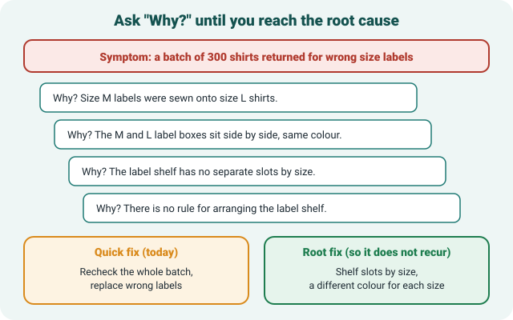

K3 · Problem solving and decision making › Level 3 Secure
Find the root cause before fixing, not just the symptom
This lesson completes Sheet 4: Incident sheet. Print template. It builds on Describe a problem clearly and bring two options (Level 2).
1. Objectives
- Use a chain of "Why?" questions to go from a symptom to a cause that can be fixed.
- Split an incident into a quick fix and a root fix, each with an owner and a deadline.
2. Retrieval warm-up
- What are the 4 steps for handling a customer request?
- When a customer asks for something beyond your authority, what do you say?
Answers
- Listen fully; confirm; option and time; follow up.
- You pass the request to the person who decides, and give the customer a time to report back.
Review: Serving customers.
3. Explanation
When something goes wrong, we tend to fix the visible damage at once. That needs doing. But if we stop there, the problem comes back.
Symptom and root cause. A symptom is what we see. The root cause is what makes the problem happen. Fix it, and the problem does not come back.
Ask "Why?" several times. Start from the symptom. For each answer, ask "Why?" again. After 3–5 rounds, you usually reach a process, tool or arrangement that can be fixed.

Three tips when asking "Why?":
- Ask about the process, not the person. "Why did Lucy sew the wrong label?" often stops at "Lucy was careless". "Why is it easy to sew the wrong label?" goes further.
- Check with data. Each answer is a hypothesis. Check it: which shift, which machine, how many times?
- Stop where you can fix something. A cause like "not enough staff" is often out of reach. Look for another cause that you or your team can fix.
Incident sheet
- SymptomWhat, where, when, how many.
- "Why?" chainEach answer checked with data.
- Quick fixContain the damage today.
- Root fixWho, by when, and when to check again.
As a new employee you may not have the authority to make the root fix. You can still write the sheet and make a proposal. That shows Level 3 ability.
4. Workplace example
Hypothetical scenario. Daniel has worked in quality checking for 2 months at a garment workshop. A batch of 300 shirts is returned by the customer because of wrong size labels.
The line supervisor plans to warn the person who sewed the labels, and leave it there. Daniel asks for 30 minutes to fill in an incident sheet.
Daniel counts: 41 shirts are wrong, all size L with an M label. None are wrong the other way. Daniel checks the label shelf. The M and L boxes sit side by side, and the labels are the same white. The shelf has no slots. He asks the stores manager: there is no rule for arranging the label shelf.
Daniel proposes. Quick fix: recheck the whole batch and replace labels today. Root fix: divide the shelf into slots by size, with a colour tape for each size; stores to do it by Friday. After 2 weeks, count wrong-label shirts again.
Two weeks later, there are no more shirts with the wrong size label.
Why this works: Daniel asks about the shelf, not who to blame. The data "only L became M" points to the right place. The solution has a deadline and a check afterwards.
5. Practice
Hypothetical scenario. You work in customer service for a chain of laundromats. This month, 12 customers complained of getting the wrong laundry back. You check the log: 10 of the 12 cases were on the evening shift. The evening shift has only 1 person, who both takes in and hands back laundry. Bags are labelled with the customer's name in marker pen, which smudges when wet.
Fill in an incident sheet: symptom, "Why?" chain, quick fix, root fix.
Hint 1
The data "10 of 12 cases on the evening shift" tells you where to ask "Why?".
Hint 2
"Too few staff in the evening" may be hard to fix quickly. Is there another cause you could fix cheaply?
Model answer
- Symptom: 12 wrong handovers this month, 10 on the evening shift.
- Why? Staff misread the name on the bag.
- Why? Names are written in marker pen and smudge when bags are wet.
- Why? There is no waterproof way to mark bags.
- Quick fix: call the 12 customers this week to apologise and swap the laundry back.
- Root fix (proposal): numbered plastic tags, with the customer keeping one half. The manager decides; try it for 2 weeks at one shop, then count mix-ups again.
Note: "1 person on the evening shift" is also a possible cause. Mention it on the sheet for the manager to consider.
(The figures are hypothetical.)
6. Self-check
Choose an answer. Every option has an explanation.
Question 1. A café keeps running out of fresh milk on Saturday afternoons. Which action is a root fix?
-
Not quite. This is a quick fix. It solves today, but next week it will run out again.
-
Correct. Correct. Using data to change how you order stops the problem coming back.
-
Not quite. This changes drink quality and does not deal with ordering too little.
Question 2. Which question leads better to the root cause?
-
Not quite. Questions about people usually stop at blame, not at something to fix.
-
Correct. Correct. Asking about the process finds something you can fix so it does not recur.
-
Not quite. This judges how bad it is, but does not help find the cause.
Question 3. You suspect invoice printing errors come from an old printer. What should come next?
-
Not quite. It is still a hypothesis. Without checking, you may spend money and still have the error.
-
Correct. Correct. Data confirms or rules out the hypothesis before anyone decides.
-
Not quite. Until you check, you cannot be sure it is the root cause.
Question 4. You are new and cannot change processes yet. What do you do with the root cause you found?
-
Not quite. You can still make a proposal. That is how you show Level 3 ability.
-
Not quite. Changing things without authority can cause conflict or new errors.
-
Correct. Correct. The person with authority decides, based on your sheet and data.
7. Reflection
- What problem keeps coming back where you work? Is everyone doing quick fixes or root fixes?
- The last time you asked "Who made the mistake?", what would the process question have been?
8. Real-world application
In the next 7 days, choose a small problem at work. Fill in Sheet 4 with at least one data check. Send your root fix proposal to the person in charge, written as in Describe a problem clearly and bring two options.
9. Metadata
| skill | K3 · Problem solving and decision making |
|---|---|
| level | Level 3 · Secure |
| group | N3 |
| framework_map | WEF: Analytical thinking; CSfW: 3c Identify and solve problems; SkillsFuture CCS: Problem Solving; Sense Making; NACE: Critical Thinking; LifeComp: L2 Critical thinking (reference only) |
| original | Vietnamese version |
| updated | 2026-11-14 |
Finish the lesson
Mark it as done and the site suggests reviews after 1, 3 and 7 days. The data stays on your device only.
Suggested reviews: